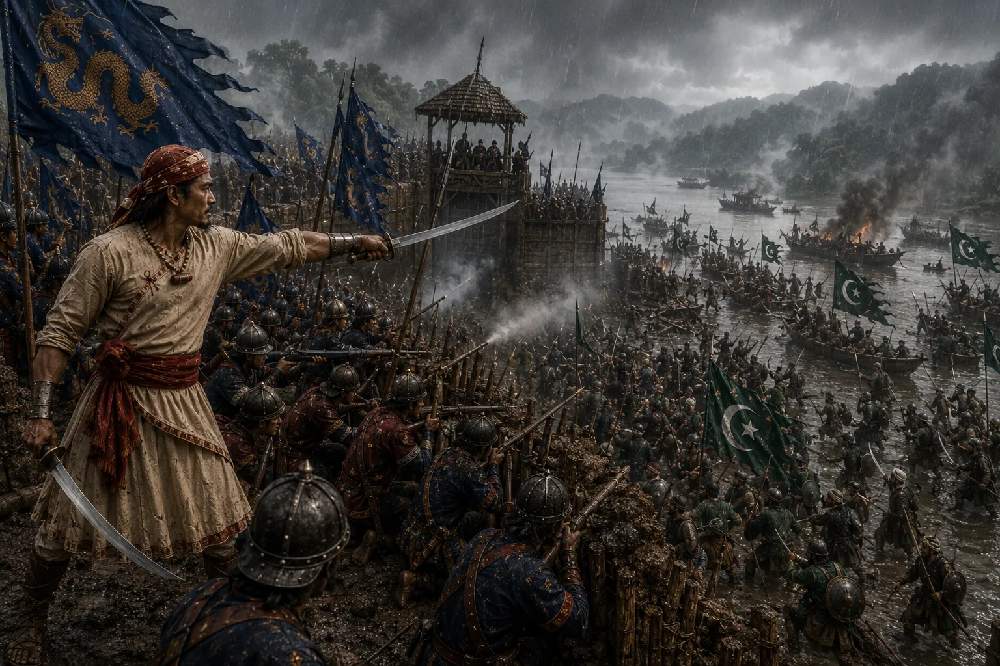

Recapture of the Strategic Fort of Itakhuli
1667 · Against the Mughal Empire

Lachit storm-attacks the strategic Itakhuli fortress, capturing vast Mughal artillery, war sloops, and driving imperial forces beyond the Manas.
Sources have not yet been catalogued for this record.
People: Chakradhwaj Singha (Supangmung), Lachit Borphukan
Open this scene in the interactive archive · Follow this event on MAP